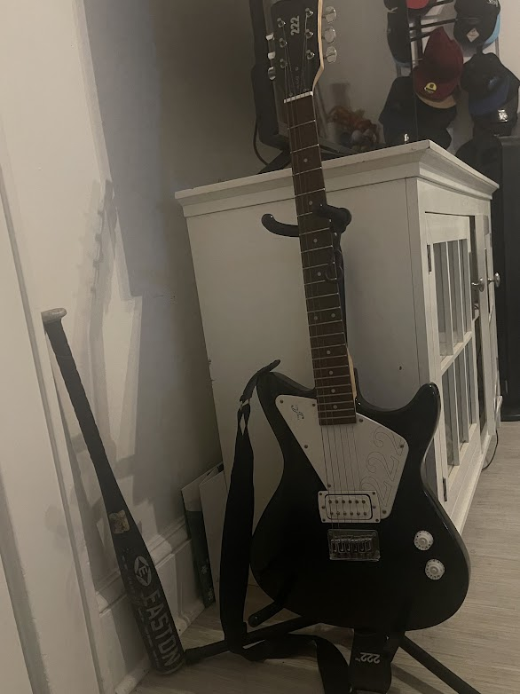
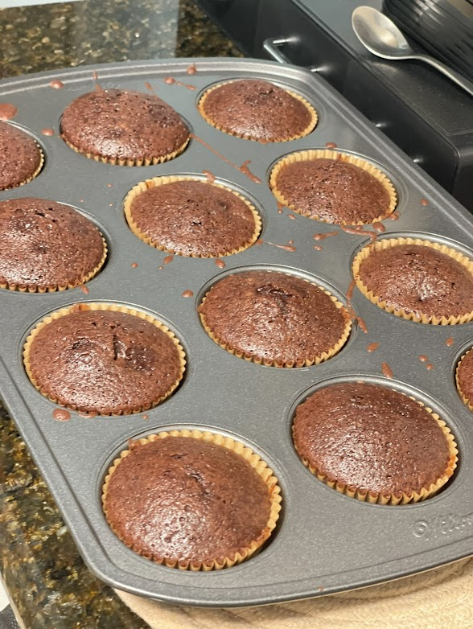

Here is an image of me!
Hello, my name is Cloud Refazo. I am born a Filipino and I have a really huge family, I have many aunts, uncles, cousins, family friends, that are either in NYC, or somewhere else in the world. As a Filipino, you must know that all of us love to party! Our parties can last entire nights, doing karaoke sessions with our family, making some of the best food, and the best late night talks with family. We are very proud to be Filipinos and we will never be embarrassed to show our true selves. Some examples of where some of my family are in the world is Canada, Florida, California, Turks & Caicos, Japan, Mongolia, and of course the Philippines. I grew up in Queens, living in a very nice neighborhood. Me and my family had a decent sized house, other than just me and my parents, there was also my dog, aunt, uncle, cousins, grandma, and grandpa that lived with us in that house. All my neighbors there treated me and my family as if we were all one big family. Later in the future though, after the passing of my grandpa, me, my mom, dad, & dog moved to a new house, not too far from our old one.

I have a lot of hobbies, though there are many to choose from (and that I would love to talk about), here are my top 2 hobbies that I absolutely love doing. For my number 1 hobby, it is playing guitar. Ever since December of last year, I have been practicing nonstop when I play guitar. When I first started out, pressing down on strings hurt my fingers so much. I could barely play any simple chords and the sound my guitar made whenever I strummed it sounded horrible. But over the span of a few weeks, I got used to the pain and I don't even feel it anymore, I was able to play a few chords now and my guitar sounded great whenever I strummed it. But now over the span of many monht up until this moment, I can play at least a few songs now! I request friends and family to see what songs they would like me to play, and if I think I can learn it, I will definitely do my best to play it for them. But if the song is difficult for my level, I'll write the song down in my notes, that way I can keep it in mind so I can play it for them in the future.
(Here is a picture of my guitar)
My second favorite hobby is baking. My mom introduced me to baking back in middle school, and honestly it is just so nice and peaceful making sweets, especially knowing you are gonna give them out to either family or friends! I honestly love seeing the look on people's faces when I give them some sweets I baked and they are just happy to have a taste and eat it. That is the thing that brings me so much joy whenever I bake! I write down all the recipes I learned in a little journal I keep. The only things I know how to bake is brownies, cookies, and chiffon cake.
(Here is a picture of the brownies I baked)
 Practice